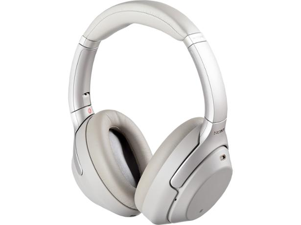
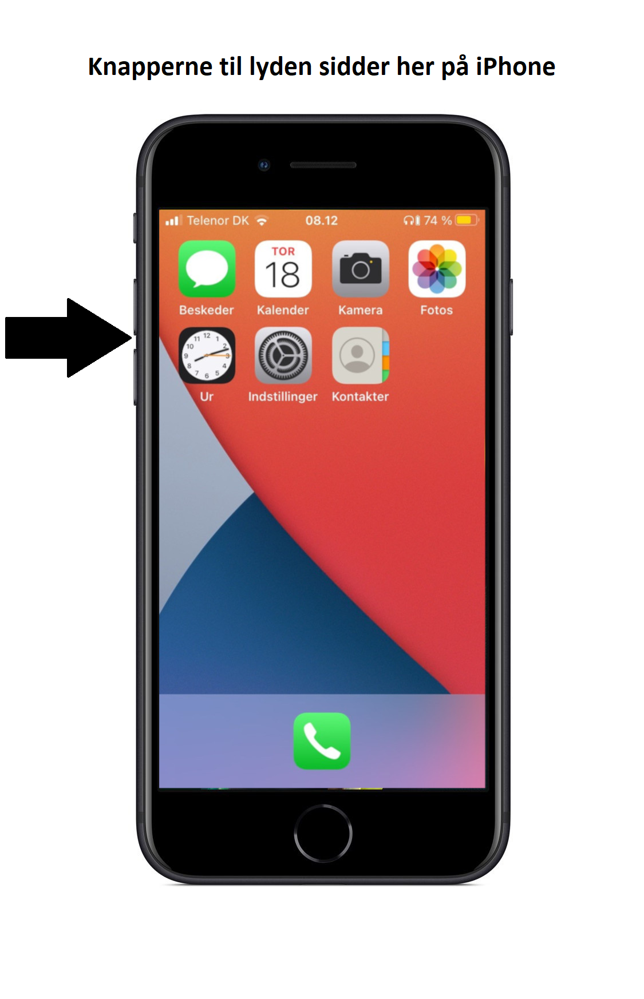
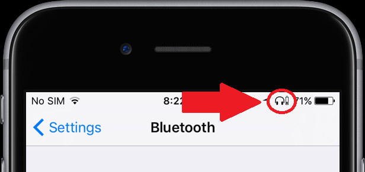
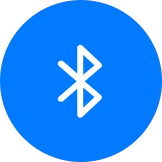

Lyd
TILBAGE
Sony WH-1000XM3
Hvis dine høretelefoner ikke virker kan der typisk være 3 grunde til det.
De kan vende forkert, lyden er skruet ned, eller de mangler forbindelse over bluetooth.
Her kigger vi på dem alle 3.

Vender de forkert?
Knapperne hvor man slukker og tænder skal være på VENSTRE side
Den lille røde prik skal være på HØJRE side
Er lyden skruet op?
På din iPhone sidder knapperne på venstre side af skærmen.
På din iPad sidder knapperne på toppen af skærmen i venstre side.

Er der Bluetooth forbindelse?
Hvis dette logo IKKE kan ses i toppen af skærmen skal vi have tjekket indstillingerne for Bluetooth.

Tryk på Bluetooth logoet for at se mere
